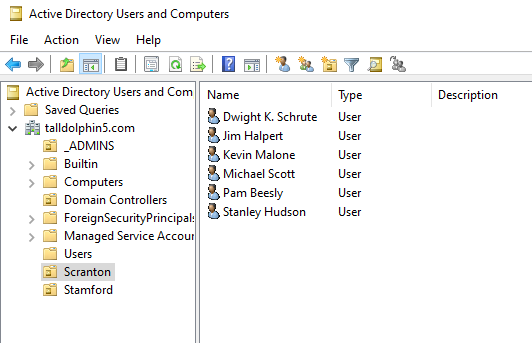

This page is a work in progress
This page is intended to highlight the key roles and features I have installed and configured on a windows server running in a VirtualBox VM.
I added a scope with the range 172.16.0.100-172.16.0.200
I left the lease duration as the default but I recognise that you would want a shorter one when assigning IP addresses to guests on a free wifi network and a longer lease for staff computers and printers.

I confirmed that it was set up correctly by adding a windows 10 client machine to the domain.
It was assigned 172.16.0.100 by DHCP.
I created organisational units and added new users to them.
